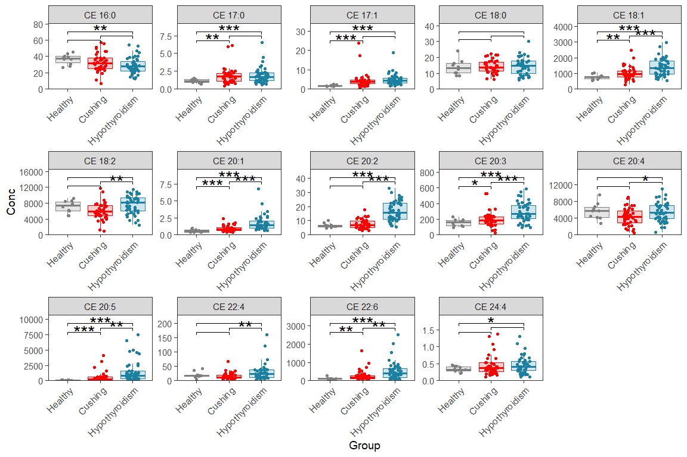

7 Box plots with stats of a full dataset
7.1 Libraries
library(here)
library(tidyverse)7.2 Import and prepare dataset
We import a lipidomics dataset with lipid concentrations as a flat table. The table also contains the experiment group (Column Group) and the Sample ID (SubjectID) ::: {.cell}
d_orig <- read_csv(here("data/Metabolites-1614644-supplementary.csv"))
# Convert to long format
d_long <- d_orig|>
pivot_longer(cols = -SubjectID:-Group, names_to = "Lipid", values_to = "Conc"):::
?(caption)
| SubjectID | Group | Lipid | Conc |
|---|---|---|---|
| HB_01 | Healthy | CE 16:0 | 36.820 |
| HB_01 | Healthy | CE 17:0 | 1.016 |
| HB_01 | Healthy | CE 17:1 | 1.344 |
| HB_01 | Healthy | CE 18:0 | 12.343 |
| HB_01 | Healthy | CE 18:1 | 573.827 |
| HB_01 | Healthy | CE 18:2 | 4783.391 |
7.3 Box/dot plot with comparisons
This is for one page (means one plot with n rows and m columns)
# Order the groups as you wish (otherwise it will be alphabetical)
d_long$Group <- factor(d_long$Group,
levels = c("Healthy", "Cushing", "Hypothyroidism"))
# Define your color for each group,
# can also get colors (e.g. #1b80a1) via e.g. https://g.co/kgs/DQH6Fr
my_colors <- c(Healthy = "grey50", Cushing = "red", Hypothyroidism = "#1b80a1")
# We just take the CE here, as we cannot plot 200 lipids in one page
d_plot <- d_long |> filter(str_detect(Lipid, "CE"))
ggplot(d_plot, aes(x = Group, y = Conc, color = Group,fill = Group)) +
geom_boxplot(alpha = 0.2, lwd=0.3, outlier.shape = NA) +
geom_jitter(size = 0.5,width = 0.2) +
facet_wrap(~Lipid, scales = "free", nrow = 4, ncol = 5) +
scale_y_continuous(limits = c(0,NA), expand = expansion(mult = c(0, .15)))+
scale_color_manual(values = my_colors) +
scale_fill_manual(values = my_colors) +
ggsignif::geom_signif(
comparisons = list(
c("Healthy", "Cushing") ,
c("Cushing", "Hypothyroidism"),
c("Healthy", "Hypothyroidism")
),
test = "t.test",
test.args = list(paired=FALSE, var.equal = FALSE, na.rm = TRUE),
map_signif_level = c("***"=0.001, "**"=0.01, "*"=0.05, " " = 1),
margin_top = 0.05, step_increase = 0.1, vjust = 0.5, size = 0.2,
tip_length = 0.05, textsize = 4, color = "black") +
theme_bw(base_size = 7) +
theme(
axis.text.x = element_text( size=6, angle = 45,vjust = 1, hjust = 1),
panel.grid = element_blank(),
legend.position="none"
)
7.4 Box/dot plot with comparisons of a full dataset (multiple pages)
Here we make the same plots as before but over multiple pages/figures, like this we can make boxplots for each lipid If you adopt this for your own data, you need to set number of plots per page (number of rows and columns), also you need to update it with your group names and colors.
# Order the groups as you wish (otherwise it will be alphabetical), if you are
d_long$Group <- factor(d_long$Group,
levels = c("Healthy", "Cushing", "Hypothyroidism"))
# Define your color for each group,
# can also get colors (e.g. #1b80a1) via e.g. https://g.co/kgs/DQH6Fr
my_colors <- c(Healthy = "grey50", Cushing = "red", Hypothyroidism = "#1b80a1")
# In this example we subet to have 3 pages, remove the filter for all lipids
d_plot <- d_long |> filter(str_detect(Lipid, "LPC|LPE"))
# Define a function to plot one faceted plot (=one page)
plot_one_page <- function(data, n_row, n_col){
ggplot(data, aes(x = Group, y = Conc, color = Group,fill = Group)) +
geom_boxplot(alpha = 0.2, lwd=0.3, outlier.shape = NA) +
geom_jitter(size = 0.5,width = 0.2) +
facet_wrap(~Lipid, scales = "free", nrow = n_row, ncol = n_col) +
scale_y_continuous(limits = c(0,NA), expand = expansion(mult = c(0, .15)))+
scale_color_manual(values = my_colors) +
scale_fill_manual(values = my_colors) +
ggsignif::geom_signif(
comparisons = list(
c("Healthy", "Cushing") ,
c("Cushing", "Hypothyroidism"),
c("Healthy", "Hypothyroidism")
),
test = "t.test",
test.args = list(paired=FALSE, var.equal = FALSE, na.rm = TRUE),
map_signif_level = c("***"=0.001, "**"=0.01, "*"=0.05, " " = 1),
margin_top = 0.05, step_increase = 0.1, vjust = 0.5, size = 0.2,
tip_length = 0.05, textsize = 4, color = "black") +
theme_bw(base_size = 7) +
theme(
axis.text.x = element_text( size=6, angle = 45,vjust = 1, hjust = 1),
panel.grid = element_blank(),
legend.position="none"
)
}
# Set how many plots per page (number of rows and columns)
rows_page = 3
columns_page = 5
my_plots <- d_plot %>%
group_by(Lipid) |>
mutate(grp_number = ceiling(cur_group_id()/ (rows_page * columns_page))) |>
group_by(grp_number) %>%
nest() %>%
mutate(plt = map(data, ~ plot_one_page(.,n_row = rows_page, n_col = columns_page)))
my_plots$plt
# as pdf
# pdf(file = "myplot.pdf", onefile = TRUE, paper = "A4r", width = 11)
# my_plots$plt
# dev.off()